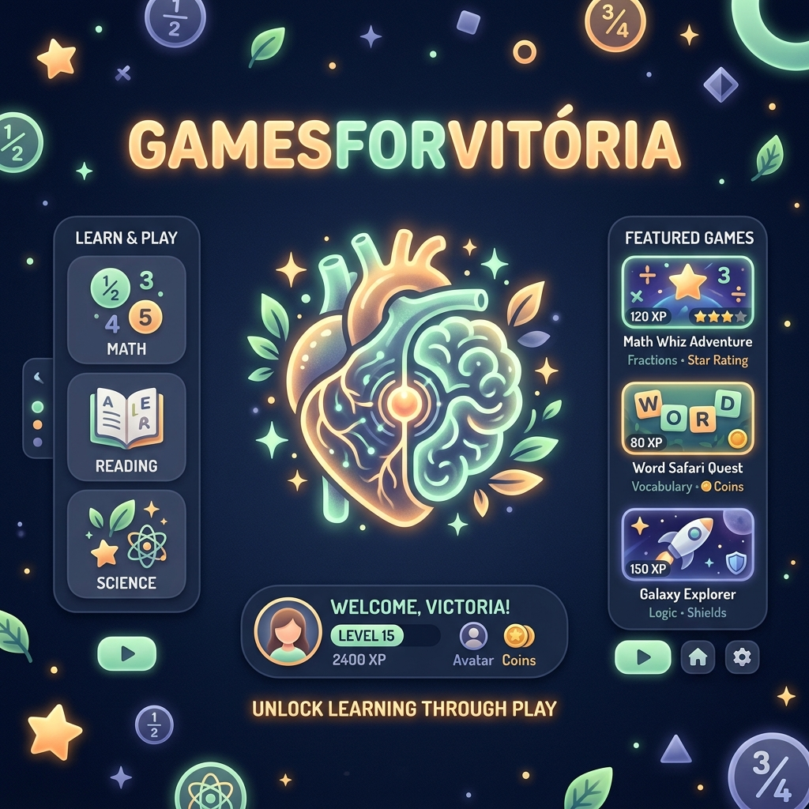

Missões Educativas
Ensino Fundamental (4º Ano)
Escolha uma das aventuras interativas abaixo criadas em conformidade com as diretrizes e habilidades da BNCC.
Mestre das Frações
Pizza Gourmet
Ajude o Chef a fatiar, pintar e entregar as pizzas ideais para os bichinhos. Domine numeradores e denominadores na prática de forma visual e deliciosa!
Conexão Natureza
Cadeia Alimentar
Organize o fluxo de energia dos produtores aos decompositores em 3 ecossistemas incríveis: Jardim, Oceano e Savana. Equilibre a biodiversidade!
Eco-Tactics
Batalha pelo Ecossistema
Defenda a natureza invocando cadeias biológicas ativas contra a poluição! Gerencie a fome dos animais e controle o clima em tempo real.
BioRunner
Jornada pelo Corpo Humano
Controle um glóbulo branco defensor em uma jornada pelo corpo! Supere vírus e bactérias e resolva desafios dos sistemas respiratório, circulatório e digestivo.
HistóriaCorrida
Fuga pelo Tempo
Viaje no tempo e explore o Brasil Pré-Colonial, Colonial, Império e República. Encontre pergaminhos escondidos e decifre os portais temporais da história!